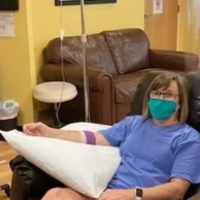
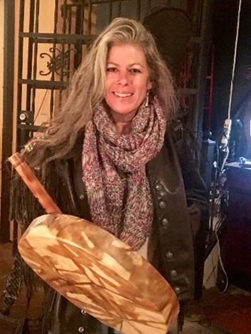

(941) 955-6220
Real stories of hope, healing, and recovery from the people we serve every day.

Florida Integrative Medical Center gave me my life back. I’m not exaggerating. Before I came to FLIMC and got SOT, I was nearly bedridden. I couldn’t function and was suffering terribly from Lyme and co-infections. I was in denial that I was even sick because I’d tried treatment after treatment with no results. And then I met Anna at FLIMC and she really validated what I was going through when no other doctor or medical professional would.
As I’ve come for treatments at FLIMC, I’ve come to find that everyone is just as hospitable. They not only listen to me but they really fight for me. I have never met finer doctors, techs, and staff in my life. With all the knowledge they have of SOT, I always feel like I’m in safe hands (which is more than I can say for most other doctors). Now, as the SOT is starting to really take effect, I’m starting to rise from the pit I fought to get out of for so long and couldn’t. I feel better than I have in YEARS. I’m functioning again. And I owe it all to FLIMC!

Former Lyme Warrior
My name is Lori and I was diagnosed with late-stage Lyme in April 2007. After the initial diagnosis, I was fortunate to receive two months of Doxycycline and went into remission until 2010. I then worked with a wonderful Lyme-literate doctor, taking numerous supplements and multiple antibiotics for 11 months. I went into remission off and on, spending over $20,000 on treatments.
In 2016, I had a lesion on my brain and had to go back on Doxycycline for over a year. I continued to relapse until 2019, always experiencing the same severe symptoms.
My primary symptoms included IBS, severe joint pain, brain fog, memory issues, itchy skin, eye floaters, light sensitivity, tinnitus, hair loss, insomnia, hot/cold flashes, anxiety, depression, and extreme fatigue.
After my father passed in 2019, my symptoms returned with a vengeance. I started researching new treatments and came across SOT (Supportive Oligonucleotide Therapy) through a Lyme support group.
I chose Florida Integrative Medical Center and Dr. Monhollon for this breakthrough therapy. I received my first SOT for Borrelia Burgdorferi in June 2020, and my second in March 2021.
Four months post-SOT, I tested negative for Borrelia and all my symptoms disappeared. I'm now powerwalking, going to the gym, enjoying the sun, sleeping well, and reconnecting with friends. I also had floaters removed via vitreolysis, and my vision is now 20/20.
Thank you, FLIMC and Dr. Monhollon, for giving me my life back!

My name is Prince Matharu, and I had been dealing with Lyme, mold toxicity, severe immune dysregulation, and tissue degeneration. I went from specialist to specialist—from Western medicine to Chinese traditional medicine—without lasting relief.
I discovered FLIMC while researching SOT treatments for Lyme. The person who attended me was kind, patient, and spent over 20 minutes discussing my situation and explaining the therapy. Unlike other places that charged high fees just for a consultation, FLIMC made me feel supported from the start.
Eventually, I chose to do Ozone EBO2 therapy along with exosomes. These cutting-edge treatments are offered at only a few clinics nationwide. Anna, who is extremely knowledgeable in exosome therapy, was also amazing.
Everyone at FLIMC is friendly, caring, and focused on safety. I’m still undergoing treatment, but I highly encourage anyone with complex chronic illnesses to reach out to Florida Integrative Medical Center.

I just want to thank the expert team at Florida Integrative Medical Center for their great care. I am living life to the fullest again!
I had been sick for several years and my doctors back in Michigan didn’t know what it was. Last year as we drove to Florida for the winter, I was making arrangements for dying. By the time we arrived at our Florida home all my funeral plans were made. That may seem morbid but I knew it would be happening soon. My husband, who just retired, cooked meals, cleaned and did all the shopping and I was so weak that I slept all the time. He spent his days trying to make me comfortable. After we arrived in Florida he found a doctor facility that he took me to about an hour away. They thought I had Lyme’s disease but they insisted I needed a treatment package that would cost $28,000 and it would be the first of many treatment packages. We knew we couldn’t afford it. So we prayed and he located Florida Integrative Medical Center.
Dr. Monhollon was able to determine I had Lyme’s Disease as well as several infections and parasites. They drew my blood and sent it to Vibrant Labs. After a few weeks, the blood work returned describing the strains of Lymes and the co-infections that made me so sick. Dr Monhollon explained that they didn’t sell ‘packages’ and we were able to afford all the treatments he recommended. I immediately began infusions to strengthen me and blood was drawn for my first SOT. Since it takes a while for it to come back from Greece, they used this time for several EBO2 treatments that made such a difference. That was my turning point. I went pleasure shopping for the first time and had hope for the first time.
I had a total of 3 SOT’s along with the EBO2’s. By April I was feeling really good.
Now it is mid-November and I feel like a new person. I do many physical activities now on a regular basis and haven’t had a nap in months. My husband can’t keep up with me and he hasn’t had to cook, clean or grocery shop since last spring! We couldn’t be more happy !!!
When I first arrived at Florida Integrative Medical Center I was hopeless. Now I have my life back!
Thanks for all of the meticulous expert care I received. All the staff was so friendly and supportive. I just can’t thank them enough. You will always have a special place in my heart.
Thank you again for everything!

My name is Agnieszka and I am a health care practitioner, to be exact a CranioSacral therapist. I’ve been in this profession for over 20 years and working with a variety of people, different ages and conditions as well….
I’ve been usually on the other side of equation in healing journey, helping people to achieve their health goal….
I’ve been also referring my patients to FLIMC and Dr.Monholland for years till finally I’ve connected all my dots of discomfort in my body while listening to my patients discomfort symptoms….
Long story short, to my “surprise “ I’ve shared lots of their symptoms and decided to get tested for Lyme. I got results with 4 different infections with main Lyme disease, which by that time put my entire body “on fire” with inflammation. I was born in Poland, where Lyme is quite “famous “ and thriving, making people so sick that they can’t even dream of perfect health.
I could barely function never mind working. Spent hours with different IV drips, foot detox, daily sauna and 4 SOT treatments.
Then…..MIRACLE treatment was offered to me: EBO2!
I’m not going to go into details what EBO2 treatment is but what it and did for me.
It is MY go-to treatment by itself but if combined with small amounts of Methylene blue IV….it is literally mind blowing.
The treatment lasts about 1,5h all together but I have to say each time I’ve received the combination of the two: about 20 min into a treatment I start feeling extremely aware and crispy clean in my brain, like my brain cells are actually doing what they supposed to do, connecting and communicating vs being just a static noise there, my vision improves at the spot right there and inflammation reduces drastically!!!!
There is a sense of good, clean High on feeling good.
It didn’t happen after the first treatment but around the fifth that my joint inflammation is so much less than before. I can actually take longer walks without my big toes feeling like they break each time I make the next step.
Please try it for yourself, it really works and you will feel better in your body and life. What’s better than that?

I’ve had Lyme since 2009. For ten years, I visited many doctors and specialists. I had pain blocks, a muscle biopsy, and was diagnosed with fibromyalgia, carpal tunnel syndrome, depression, and more. Eventually, I received a Lyme diagnosis, but it wasn’t CDC approved.
I treated with antibiotics for 1.5 years and improved slightly. Later, I found out about SOT and tested CDC-positive for Lyme. I received my first SOT in December 2020 at FLIMC and felt better immediately. I used to be unable to walk around the block or hold a gallon of milk. Since my first SOT, I’ve gone snow skiing and spent four days walking around Disney World. I’m about 80% better now and getting my second SOT.
I had originally chosen a more expensive clinic in Georgia, but after disorganized Zoom appointments, I called FLIMC. I’m so glad I chose FLIMC—I feel cared for and am improving greatly.
In September 2020, I woke up completely bedridden, unable to walk. Every bone, joint, and muscle ached with level 10 pain. I was convinced I had bone cancer. I endured two exhausting months of misdiagnoses—including Lupus, Polymyositis, and Sjögren’s syndrome—along with a negative Western Blot test and prescriptions for narcotics, muscle relaxers, and Prednisone.
I refused all medications except Prednisone. At 60mg, I could walk by late morning. I didn’t know what was wrong, but I remembered that Dr. Monhollon had helped my mom fight cancer 20 years ago.
In just five minutes, he diagnosed me with Lyme disease and mercury poisoning. Bloodwork confirmed everything he had said. I also saw a biological dentist who confirmed leaky fillings, which I had removed.
Dr. Monhollon told me about SOT, and after receiving bloodwork showing Borrelia Mayonii, I ordered it immediately. I received my SOT on January 29, 2021. On March 24—just 8.5 weeks later—I woke up feeling like myself again.
Today, I feel healed and fully able to do everything I could before I got sick. I also continued antibiotics, herbal supplements, parasite cleanses, and intensive detox protocols (daily sauna, Epsom salt baths, EVOX, coffee enemas, etc.).
FLIMC and the staff are incredible. Dr. Monhollon saved my life, and you couldn’t be in better hands.

My name is Barbara Huntoon and I have had the honor of knowing Dr. Monhollon’s work for close to 30 years. From 1995-1998 I was the owner of “The Herb Garden”, a small natural health and herbal apothecary store in New Port Richey, Florida.
My health challenges began with a bad reaction to the polio vaccine when I was 7. I remember my mother refusing to let me go to the hospital, and she cared for my pneumonia at home. I was very ill, particularly with respiratory infections, severe migraines, and a damaged lymph system. I also became chemically sensitive, and would react to chemical smells and substances on my skin.
This led me on a journey in my early adult life to study herbal medicine. After years of success in improving my health, I opened my won herbal store to help others.
The holistic health community was a very tight knit group around our area and the one Doctor’s name that we heard great things from was DR. Monhollan, who was in St. Pete at the time. We actively referred our clients to him and witnessed many testimonies about his work in the 90’s.
I moved to Sarasota in 1998 and began working at Full Spectrum Health, a holistic nutritional clinic owned by (the late) Eve Prang Plews.
My apprenticeship there was extraordinary, because the practitioners skills in diagnostics, herbology, homeopath, and biochemistry was her gift and I witnessed many people come back to life through intregrative medical protocols as Dr. Monhollan’s clinic provides. From 1999 to 2005 I worked with Eve and ran her store front, providing support for patient programs. We had a great team of holistic doctors and practitioners in Sarasota at this time, and then Dr. Monhollon moved to Sarasota.
Fast forward 25 years, to 2017, I was exposed to a deadly fungus through a cut in my ankle called crypto mycosis. I could not get out of bed for months, and had severe skin rashes rotating, with lung and sinus infections. I finally became a patient of Dr. Monhollon’s by receiving the UV/IV blood cleansing, which cleared my symptoms in 3 treatments. I had my life back again. In 2023, I walked into a cloud of pesticide unknowingly, and I went down fast. My spleen swelled and I became very ill. I sought out Dr. M’s clinic for help and received more UV/IV which stabilized me quickly. Again that year, as I was out hiking, and was exposed to chiggers, which caused another severe skin reaction. The bites turned to abscesses quickly, and I was fighting sepsis. Again, I went to Dr. Monhollon’s clinic and his wonderful staff guided me through another series of UV/IV treatments and I recovered fully.
In July 2024 I again encountered bug bites and had a severe reaction. This time, it was sand fleas which transmitted a protozoa parasite into my skin causing severe infection and rapid spreading on my face, hand, chest and side, once again I was in danger of sepsis. The damage to my skin was frightening and as a vocalist and musical performer, the possibility of severe scarring on my face is very real with this aggressive infection.
I decided to try the EBO2 treatments. Realizing this is the new cutting-edge technology for blood purification and Lyme disease and is far more powerful than any other blood detox technique, it is worth the investment. I believe it will clean out the other mold, fungus and toxins that have been in my system for years.
I have completed my first EBO2 and immediately observed increased energy, and rapid drying of the sores from the infection. The follow up Myers/glutathione accelerated my healing process and at this point, 3 days after my first treatment, everything is dry, tightening and healing. I look forward to the next two treatments, as I am now finally one of Dr. Monhollon’s miracle cases.
I believed in him long ago because of all the testimonies I witnessed. Today, I am deeply grateful for his team of kind, brilliant, caring health care members who saved my life…again.